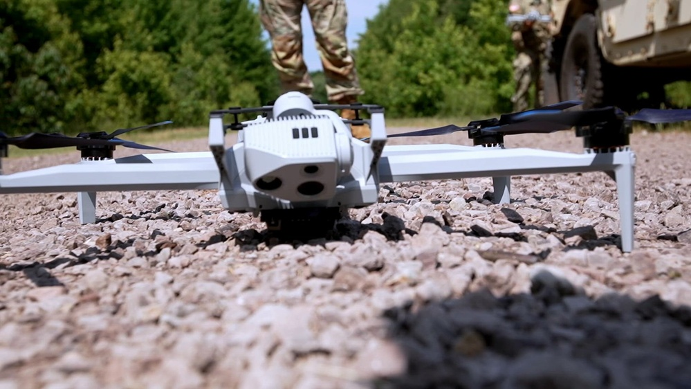

ARGUS combines visible and short-wave infrared imagery with convolutional neural networks running at the sensor. The technical dossier below covers the sensing physics, the inference architecture, and the kinematic identification model that keeps ARGUS working when faces, labels and networks are unavailable.

Visible-band sensors give ARGUS spatial resolution and texture; short-wave infrared gives it penetration of darkness, glare, haze and partial obscuration. SWIR reflects off materials and skin rather than emitting thermal signatures, which means subjects remain observable in conditions where visible cameras wash out and long-wave thermal cannot resolve fine structure. Fusing the two bands at the detection level — not the display level — produces one machine-generated picture of activity that stays stable across lighting transitions, sun angle and atmospheric degradation.
Both feeds are processed continuously. ARGUS does not switch modes between day and night operation; the perception layer treats both bands as simultaneous inputs, so a track established in visible persists through a glare event, a shadow crossing or dusk onset without a handoff. This is the difference between a camera that records and a perception system that maintains custody.
ARGUS places machine vision at the edge of the sensing architecture. Convolutional neural networks process incoming imagery locally to extract detections, movement signatures, classifications and position data in real time — no frame traverses a remote processing infrastructure before it becomes a detection.
| LAYER | IMPLEMENTATION | FUNCTION |
|---|---|---|
| SENSOR INPUT | Visible / SWIR dual-band | Continuous optical and short-wave infrared imagery from compatible airborne, perimeter or fixed sensor platforms. |
| LOCAL INFERENCE | CNN ON EDGE COMPUTE | Frame-level detection, spatial feature extraction and subject characterization close to the sensor. |
| KINEMATIC MODEL | MOTION-SIGNATURE ANALYSIS | Gait, stride, cadence and proportional body-movement signatures used to distinguish and maintain subject tracks. |
| TRACK MANAGEMENT | PERSISTENT TRACK LOGIC | Continuous position estimation and track continuity across occlusion, band transition and scene complexity. |
| OUTPUT | STRUCTURED DATA | Track / position / classification records made available for downstream mission, security and command systems. |
ARCHITECTURE IS INTENDED FOR SYSTEMS WHERE LATENCY, BANDWIDTH AND ENVIRONMENTAL CONDITIONS IMPOSE CONSTRAINTS ON CENTRALIZED PROCESSING.
The consequence of edge placement is operational, not academic. A perimeter system that depends on a remote inference cluster fails when the link fails — precisely the degraded-communications condition under which sensing matters most. ARGUS inference runs onboard the sensing node: detections, tracks and classifications continue uninterrupted when backhaul is contested, jammed or simply absent, and structured outputs sync to the larger architecture when connectivity returns.
Model optimization targets constrained hardware: quantized inference, frame-skip logic under load, and deterministic worst-case latency rather than average-case benchmarks. A perception layer inside a mission architecture must be predictable at its limits, not merely capable at its best.
ARGUS does not rely on facial recognition as the primary identification signal. Faces are small, angle-dependent, degraded by distance and lighting — and they turn biometric identity into the tracking key. ARGUS instead analyzes gait and body-motion characteristics: stride length, cadence, posture and proportional movement signatures that remain measurable at ranges where a face is a handful of pixels.
The kinematic model distinguishes and maintains subject tracks through occlusion and re-acquisition. When a subject passes behind cover and re-emerges, motion signature — not last position alone — re-associates the track. This is how custody survives complex scenes: crowds, vegetation, structures, and the deliberate movement tactics of people who know they are being observed.
Spectral anomalies are evaluated as additional inputs to subject classification and scene understanding: material signatures, thermal contrast behavior in SWIR, and multi-band reflectance differences that separate a human subject from a decoy, an animal or a vehicle occupant. The output is a machine-generated classification with confidence data — structured information a downstream operator or fires cell can adjudicate.
SWIR band penetration maintains detection through conditions that wash out visible-only sensors: night onset, headlight glare, low sun angle, atmospheric haze and partial smoke. Dual-band input means the perception layer degrades gracefully instead of failing at a threshold.
Edge inference continues when communications are jammed, saturated or severed. Local detection and track continuity persist; structured outputs sync to the mission architecture on link restoration. The sensing picture does not blink out with the network.
Track management logic maintains subject custody through occlusion events, crowd crossing and re-acquisition. Kinematic signatures re-associate tracks where position-only logic would drop them — the difference between losing a subject and holding one.
Subjects who know they are observed change pace, route and formation. Motion-signature analysis is built against exactly this behavior — the model was trained on contested-range recordings, not clean datasets, and is re-trained through basin serials where operators actively try to defeat it.